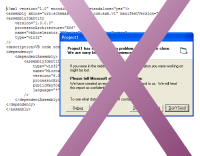
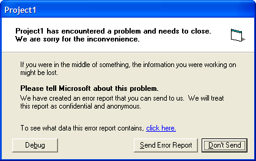

Clean Unload with Manifest Tester (8K)
Clean Unload with Manifest Tester (8K)
 Bugs: 0 / 0
Bugs: 0 / 0
 Issues: 0 / 1
Issues: 0 / 1
 Questions: 0 / 0
Questions: 0 / 0
 20 Jun 2003
20 Jun 2003
Added information about the "official" solution to the problem. Thanks to Michael Bell for sending me the information.

Preventing Crashes at Shutdown
Resolving a thorny problem with some versions of ComCtl32.DLL and VB UserControls
Some versions of ComCtl32.DLL version 6.0 cause a crash at shutdown when you enable XP Visual Styles in an application. This particularly occurs when using VB User Controls.
This article provides two solutions to the problem.
Someone Has To Do It
My main development machine had been playing up for about a month: the TCP/IP stack was impenetrably broken, hence IIS and SQL Server were not working, DVDs played in a stuttering Max Headroom/Paul Hardcastle stylee and even worse any attempt to rip a CD caused my audio ripper to crash. Time for a long overdue ground-up rebuild.
After collection the enormous pile of install CDs, downloading all of the drivers I'd, erm, misplaced and backing up, and psyching myself up for the 8 hour job with a collection of expensive lagers, I was delighted and somewhat surprised to find the whole thing went perfectly and the rebuilt machine runs like a dream. Except...
Horrific
All of a sudden about 40% of my projects that linked to ComCtl32 to apply XP Visual Styles suddenly started crashing when the application was shutdown. This chimed with a number of mails I'd received which also complained of shutdown-related problems that I'd never been able to reproduce. 16 hours of investigation later, I found the following:
- ComCtl32.DLL had been updated compared to my prior XP installation. The new version was 5.80.2800.1106, previously the version was 5.80.2600.0.
- The crash only occurred:
- In projects that included Visual Basic User Controls.
- When the project was linked to ComCtl32.DLL v6.0 (using either a file or a resource manifest).
- When running the executable version of the project.
- Adding message boxes to the application proved that the crash occurred after the last line of VB code had been executed. Regardless of how complex the project was, or how many forms, the crash only ever occurred during shutdown. GDI and User Resources were fine.
- Running a debugger against the app showed that the crash was occurring in user32.DLL following some VB runtime call.
After many attempts at running different VB apps, I finally ending up with an app that only contained a single UserControl without a single line of code in it, and that still crashed. I became confident that this problem isn't one that can be fixed by modifying the code. Whilst this problem may be fixable by MS, VB was never designed to support XP Visual Styles, and its unlikely a new service pack would be released to fix it, particularly for VB5 which is now very old.
So what to do?
Two Fixes; One Nicer Than The Other
There are two ways of solving this problem. The first is a more "correct" fix, whilst the second is nefarious hack of my own devising which can be applied more generally to any type of issue which results in an crash at shutdown.
1. The Official Fix
Microsoft acknowledges this problem in the knowledge base article KBID 309366. Unfortunately, the cause of the problem isn't explained and their suggested resolution doesn't work. However, trawling through the message boards for information about this article you will eventually find there is a solution, which is to use the API call LoadLibrary to preload Shell32.DLL during the Initialize event of the Form containing the control:
Private Declare Sub InitCommonControls Lib "comctl32.dll" ()
Private Declare Function LoadLibrary Lib "kernel32" Alias "LoadLibraryA" ( _
ByVal lpLibFileName As String) As Long
Private Declare Function FreeLibrary Lib "kernel32" ( _
ByVal hLibModule As Long) As Long
Private m_hMod As Long
Private Sub Form_Initialize()
m_hMod = LoadLibrary("shell32.dll")
InitCommonControls
End Sub
Private Sub Form_Unload(Cancel As Integer)
FreeLibrary m_hMod
End Sub
Once this is applied, crashes no longer occur. It appears that the same code can be used directly within the UserControl's own _Initialize and _Terminate events, assuming you have access to the source code for the control.
2. Ignore It And It Will Go Away
Ignorance isn't the most elegant solution, but it can be bliss, and this technique may come in useful in resolving other problems.
In this instance we're not leaking any resources, everything is being terminated and closed in the correct order, but there's some problem within the VB runtime that only occurs when VB cleans up after all executing code has stopped.
So, noting that the crash only occurs after the application is shutdown, you know that the process is trying to go away when the crash occurs. Since each application runs in its own memory space, Windows is going to clear up anything you leave lying around when it shuts down anyway. Once its done, there isn't anything left that could then continue to interfere with other applications, unless VB installed something system-wide, such as a hook, which I regard as highly unlikely.
Therefore we can resolve this problem by simply ignoring it. The only problem with that, though, is that the application keeps throwing up pesky UAE dialogs, and inviting you to send Microsoft information about the problem:
Aargh! Not Again..
Luckily, Windows offers a way to turn these off, as part of the Structured Exception Handling API. Whilst this API also allows you to intercept any UAE and keep your application running, in this case we don't care about that, since all our code has stopped running and we just want to stop the message showing. You do this by calling the SetErrorMode API call:
Private Declare Function SetErrorMode Lib "kernel32" ( _ ByVal wMode As Long) As Long Private Const SEM_FAILCRITICALERRORS = &H1 Private Const SEM_NOGPFAULTERRORBOX = &H2 Private Const SEM_NOOPENFILEERRORBOX = &H8000& ... ' Prevent all UAE dialogs and message boxes: SetErrorMode SEM_NOGPFAULTERRORBOX
This instructs Windows to eat the UAE message box. Now all you need to do is to call this as the last line of code you execute in the application. Note you could call it as the first line, but then any UAEs actually associated with code would also be swallowed and you would end up with the app disappearing without trace - not ideal.
I also added some code so that call isn't made in the IDE, since the problem only occurs in compiled executables:
Private Declare Function SetErrorMode Lib "kernel32" ( _
ByVal wMode As Long) As Long
Private Const SEM_NOGPFAULTERRORBOX = &H2&
Private m_bInIDE As Boolean
Public Sub UnloadApp()
If Not InIDE() Then
SetErrorMode SEM_NOGPFAULTERRORBOX
End If
End Sub
Public Property Get InIDE() As Boolean
Debug.Assert (IsInIDE())
InIDE = m_bInIDE
End Property
Private Function IsInIDE() As Boolean
m_bInIDE = True
IsInIDE = m_bInIDE
End Function
Determining when to call this function is application-specific, however, one simple way of doing it which will work in most cases is to add the following line of code to each of your Form's _Terminate events:
Private Sub Form_Terminate()
If (Forms.Count = 0) Then
UnloadApp
End If
End Sub
If that doesn't work for your app, then it is certain that you will know when the application is being shutdown some other way, so you can call the code there.
Demonstration Application
The download provides a simple demonstration of the second technique in use. Project1.exe is a VB project which contains a blank User Control compiled in. When you run this project with a Manifest applied, it crashes on shutdown. If you check the "Unload Cleanly" box, however, the UnloadApp method is called and all appears to be fine. Of course, the crash still actually happens, it's just that we don't see it (or care about it) anymore.
Conclusion
Applying new features to older applications can lead to unexpected problems, since the older application was not designed against these new features. However, it isn't always practical to upgrade to the latest version, and sometimes workarounds are needed.
Microsoft's ComCtl32.DLL provides a multitude of excellent features but in the past upgraded versions of this DLL have caused problems to existing apps. This appears to be continuing, despite ready availability and actual implementation (to a degree) of side-by-side versioning for the DLL.
The fixes to the UAE problem for VB applications using XP Visual Styles described in this article aren't ideal, but they are very easy to apply and work reliably.